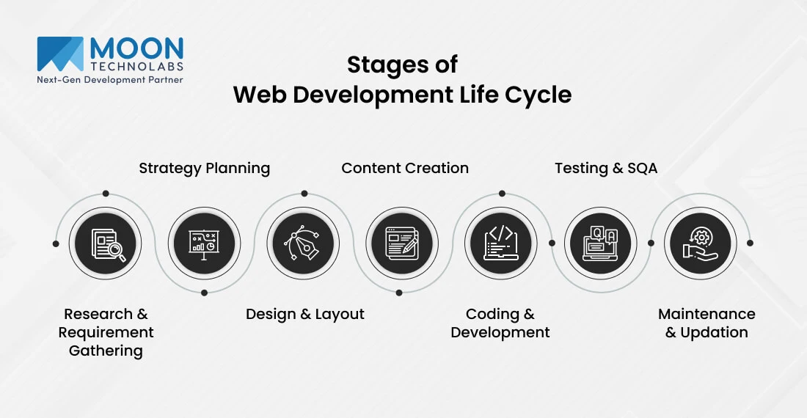

8. Maintenance
Maintenance ensures the website continues to function smoothly after launch. User feedback helps identify and fix issues quickly. Regular updates improve security and performance, especially with CMS-based sites. Ongoing support keeps the website reliable and competitive.